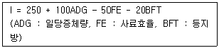
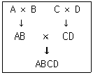

축산기사 (2018-03-04 기출문제)
1과목: 가축육종학
1. 돼지의 일당 증체량에 대하여 개체 선발을 한 결과 선발차는 0.1kg 이었으며, 이 집단에 있어 일당 증체량의 유전력은 0.2 이었다. 이 선발에서 기대되는 유전적 개량량의 이론치는?
- 0.01kg
- 0.02kg
- 0.03kg
- 0.04kg
(정답률: 89%)

2. 다음 중 돼지 개량의 목표 형질이 아닌 것은?
- 일당증체량
- 등지방두께
- 산자수
- 유지율
(정답률: 88%)
3. 다음 중 선발의 효과로 보기 어려운 것은?
- 원하는 특정한 형질의 고정이다.
- 원하지 않는 불량형질 발현의 방지이다.
- 우수한 종축을 선발하는 일이다.
- 새로운 유전자의 창조를 위함이다.
(정답률: 90%)
4. 다음 중 가축의 육종효과라고 볼 수 없는 것은?
- 신품종 육성
- 축산물 생산량의 증가
- 가축 사육환경 조절
- 축산물의 품질개선
(정답률: 79%)
5. 돼지에서 근친교배의 결과로 가장 뚜렷하게 나타나는 현상은?
- 산자수가 줄어든다.
- 활력이 증가한다.
- 번식 능력이 향상된다.
- 생산 능력이 증가한다.
(정답률: 81%)
6. 우리나라 젖소농가에서 생산된 원유의 유대를 산정하기 위한 항목으로 가장 적절한 것은?
- 유지방과 우유내 세균수
- 유지방과 무지고형분량
- 유지방과 무기물
- 단백질과 유당
(정답률: 71%)
7. 잡종교배 방법 중에서 잡종강세를 최대한 이용하기 위한 방법은?
- 3품종윤환교배
- 종료교배
- 상효역교배
- 4원교배
(정답률: 56%)
8. 검정 종료된 종모돈(♂)은 선발지수식에 의하여 선발되는데 대상형질이 아닌 것은?
- 일당증체량
- 사료요구율
- 등지방두께
- 산자수
(정답률: 66%)
9. 다음 중 여러 형질을 개량하고자 할 때 가장 효과적인 방법은?
- 선발지수식에 의한 선발
- 절단형선발
- 가계내선발
- 순차적선발
(정답률: 78%)
10. 다음 중 개체선발을 실시할 경우 가장 효과가 높은 형질은?
- 젖소의 유량
- 젖소의 유지율
- 돼지의 복당 산자수
- 닭의 생존율
(정답률: 64%)
11. 다음과 같은 선발 지수식에 근거하여 선발 시 어느 종돈을 선발하는 것이 가장 좋은가?

- 일당증체량 1kg, 사료효율 2.5, 등지방 2cm
- 일당증체량 1kg, 사료효율 2.8, 등지방 1cm
- 일당증체량1.5kg, 사료효율 3.0, 등지방 2.5cm
- 일당증체량 2kg, 사료효율 3.5, 등지방 3.0cm
(정답률: 70%)
12. 다음 중 돼지의 검정소 능력검정시 검정개시에서 종료시 체중은?
- 25kg에서 90kg까지
- 35kg에서 90kg까지
- 25kg에서 1⑤kg까지
- 30kg에서 1⑤kg까지
(정답률: 62%)
13. 다음 중 한우 후대검정에서 검정 대상우의 조사항목이 아닌 것은?
- 사료 요구율
- 체위
- 비유량
- 도체 성적
(정답률: 73%)
14. 다음 중 젖소의 산유 능력 검정에 대한 설명으로 옳은 것은?
- 착유 일수가 90일 이하인 경우는 3⑤일로 보정할 수 없다.
- 검정 중 임신 후 180일 이내에 유산 또는 사산하는 경우에는 기록을 중지하고 이때까지의 산유기록을 3⑤일로 보정하여 사용한다.
- 첫 검정기록은 분만 후 10~50일 이후에 실시 한다.
- 검정기록은 분만 후 6일차 아침 착유부터 비유기 끝까지 실시하고 산유랑은 분만일로부터 기록한다.
(정답률: 47%)
15. 다음은 소의 대립형질 간의 우열성 관계를 “우성 ＞ 열성” 의 관계로 표시하였다. 반대로 표시되어 있는 것은?
- 유각 ＞ 무각
- 홀스타인피모의 흑색 ＞ 홀스타인피모의 적색
- 헤어포드의 안면 백색 ＞ 기타의 색
- 정상우 ＞ 왜소우
(정답률: 79%)
16. 특정개체의 능력이 극히 우수하고 그 우수성이 유전적 원인에 기인할 때 이들과 혈연관계가 높은 자손을 만들기 위한 돼지개량에서 이용되는 대표적 교배법은?
- 계통교배
- 누진교배
- 순종교배
- 윤환교배
(정답률: 50%)
17. 다음 돼지 품종 중에서 PSS(Porcine Stress Syndrome)의 halothane 검정에 대한 양성개체의 출현율이 가장 높은 것은?
- 미국 Duroc종
- 북미 Hampshire
- 벨기에 Landrace종
- 영국 Large white종
(정답률: 66%)
18. 육용계는 다음의 방법에 의한 4원 교잡종이 많이 이용되고 있다. 4원 교잡종의 부모인 AB또는 CD를 무엇이라 하는가?

- 실용계(CC)
- 종계(PS)
- 원종계(GPS)
- 순종계(PL)
(정답률: 65%)
19. 다음 중 세대간격에 대한 설명으로 틀린 것은?
- 종모우의 세대간격은 4 ~ 5년이다.
- 세대간격이 길수록 개량의 속도가 빠르다.
- 선발의 효과에 영향을 미치는 요인이다.
- 자손이 태어났을 때 양친의 평균나이이다.
(정답률: 89%)
20. 닭에 있어 횡반유전자(B)는 반성유전형질이므로 이를 이용하여 깃털색으로 자응감별이 가능토록하려면 양친의 유전자형을 어떤 식으로 하여야 하는가?
- ZBZB, ZbW
- ZBZb, ZbW
- ZBZb, ZBW
- ZbZb, ZBW
(정답률: 62%)
2과목: 가축번식생리학
21. 정소상체의 기능이 아닌 것은?
- 정자의 생멸 유지와 보호
- 정자의 성숙
- 정자의 생산
- 정자의 운반
(정답률: 74%)
22. 정자의 운동에 필요한 에너지를 합성하는 부위는?
- 두부(head)
- 경부(neck)
- 주부(main piece)
- 중편부(middle piece)
(정답률: 72%)
23. 임상적 임신진단법에 속하지 않는 것은?
- 외진법(NR법)
- 성선자극호르몬검출법
- 직장검사법
- 자궁경관점액검사법
(정답률: 53%)
24. 포유동물에서 유선의 분비상피세포를 자극하여 유즙의 합성능력을 획득시키는 호르몬은?
- oxytocin
- prolactin
- testosterone
- androgen
(정답률: 69%)
25. 태아기 유선의 발생이 시작되는 시기는?
- 유선능 발생 후
- 체지아기의 후기
- 유선선 발생 후
- 유선조 발생 후
(정답률: 51%)
26. 난자가 난관을 통과하는데 소요되는 시간이 가장 긴 것은? (단, 난관의 길이와는 상관관계가 없다.)
- 소
- 말
- 면양
- 개
(정답률: 63%)
27. 정자형성과 난포발육에 관계하는 호르몬은?
- 프로락틴(prolactin)
- 프로게스테론(Progesterone)
- 임부융모성 성선자극 호르몬(HCG)
- 난포자극 호르몬(FSH)
(정답률: 75%)
28. 발정주기 동기화의 응용과 장점에 대한 설명으로 틀린 것은?
- 분만관리와 자축관리가 더욱 용이해진다.
- 가축의 개량과 능력검정사업을 효과적으로 수행할 수 있게 한다.
- 배란을 자유로이 유도할 수 없어 계획번식과 생산조절은 불가능하다.
- 인공수정의 실시가 용이해져 정액공급 및 보관 등 제반업무를 효율적으로 수행할 수 있다.
(정답률: 86%)
29. 호르몬 중 유선관계(dict system)의 발달에 가장 중요한 것은?
- Progesterone
- Estrogen
- Androgen
- Prostaglandin F2ɑ
(정답률: 68%)
30. 교배적기를 결정할 때 고려되어야 할 요인으로 가장 적절하지 않은 것은?
- 배란시기
- 정자의 운동성
- 정자의 수정능 보유시간
- 배란된 난자의 수정능 보유시간
(정답률: 78%)
31. 정소에서 정자가 만들어질 때 발생중인 생식세포에 영양 물질을 공급하고 아울러 대사산물을 배설하는 세포는?
- 지지세포
- 간질세포
- 기저막세포
- 배아상피세포
(정답률: 59%)
32. 난자의 발달과정에서 제 1극체가 나타나 방출되는 곳은?
- 제1차 난모세포
- 제2차 난모세포
- 성숙난자
- 접합체
(정답률: 51%)
33. 축산분야의 응용에서 분만이 지연될 때 분만을 촉진하기 위하여 또는 유즙의 유하를 유도하기 위하여 사용되기도 하는 호르몬은?
- Oxytocin
- PGF2α
- PGF1α
- ADH
(정답률: 67%)
34. 소에 있어서 인공수정 적기는?
- 발정 개시 직후
- 발정이 끝날 무렵
- 발정이 끝난지 24시간 후
- 발정이 끝난지 36시간 후
(정답률: 61%)
35. 소에 있어서 자궁내 출혈 혹은 발정에 의한 출혈이 외부로 나타나는 때는 발정주기 중 어느 시기에 해당하는가?
- 발정전기
- 발정기
- 발정후기
- 발정휴지기
(정답률: 61%)
36. 쌍각자궁(bicornuate uterus)의 형태를 가진 동물은?
- 말
- 돼지
- 토끼
- 영장류
(정답률: 81%)
37. 발생학적으로 볼 때 유선(mammary gland)은?
- 내배엽에서 유래된 외분비 기관이다.
- 중배엽에서 유래된 내분비 기관이다.
- 외배엽에서 유래된 외분비 기관이다.
- 내배엽에서 유래된 내분비 기관이다.
(정답률: 62%)
38. 성숙한 수컷 포유동물의 부생식선이 아닌 것은?
- 랑게르 한스선
- 정낭선
- 정립선
- 카우퍼선
(정답률: 81%)
39. 다음 중 과배란처리 된 공란우에서 수정란이식에 가장 적합한 수정란의 채란 시기는?
- 수정 후 1 ~ 2일
- 수정 후 3 ~ 4일
- 수정 후 6 ~ 8일
- 수정 후 9 ~ 11일
(정답률: 72%)
40. 홀스타인 암소의 번식 적령기 평균 체중은?
- 100 ~ 200kg
- 200 ~ 300kg
- 300 ~ 400kg
- 400 ~ 500kg
(정답률: 67%)
3과목: 가축사양학
41. 송아지 관리에 대한 설명으로 틀린 것은?
- 소의 뿔은 사양관리를 어렵게 하고 소끼리 싸우다가 손상을 입는 경우 등 경제적 손실이 있기 때문에 제각하는 것이 좋다.
- 수송아지 거세는 육질을 좋게 하고 집단사육을 용이하게 하는 효과가 있다.
- 송아지의 개체표시는 아비와 어미를 알 수 있는 혈통 관리와 안전한 축산물 생산을 위한 생산이력추적을 가능하게 하며 질병 및 사양관리를 용이하게 한다.
- 송아지의 제각, 거세, 개체표시 시기는 어린시기보다는 어느 정도 성장하여 발육이 왕성 6개월령 이후로 늦을수록 좋다.
(정답률: 83%)
42. 흡수된 단백질이 실제 동물 체내에서 축적된 비율을 표시하는 용어는?
- 단백질 대체가
- 생물가
- 가소화 조단백질
- 영양률
(정답률: 66%)
43. 일반적인 육계의 성장 및 사료섭취에 대한 특성이 아닌 것은?
- 다른 조류와 같이 닭의 성장률은 일정하다.
- 수컷은 암컷보다 성장률이 좋다.
- 주령이 높을수록 사료섭취량이 늘어난다.
- 주령이 높을수록 암.수의 체중차이가 커진다.
(정답률: 76%)
44. 젖소가 1일 조단백질 함량이 8%인 옥수수 사일리지를 25kg 먹고, 30kg의 분을 배설하였다. 배설분 중 조단백질 함량이 2%일 경우 이 사료의 조단백질 소화율은?
- 68%
- 70%
- 72%
- 74%
(정답률: 56%)
45. 동물의 소화기관 및 부속기관의 기능에 대한 설명 중 내용이 틀린 것은
- 단위동물의 위에서는 지방의 소화가 이루어지지 않는다.
- 담즙산은 단백질 소화에 중요한 역할을 한다.
- 위의 염산(HCl)은 pepsinogen을 pspsin으로 활성화시킨다.
- 췌장에서 분비되는 Amylase는 전분을 소화시킨다.
(정답률: 51%)
46. 사료의 품질평가 방법으로 가장 정확한 방법은?
- 시각, 후각, 미각, 촉각 등에 의한 각 사료의 색, 맛, 향기, 냄새, 촉감, 형상 등을 판단하여 평가하는 경험적인 방법
- 가축을 이용한 소화시험, 사양시험, 영양시험, 대사시험 등 많은 시간과 경비, 시설, 노력 등이 필요한 동물 시험법
- 일정용량의 표준중량을 평가하고자 같은 종류의 사료 용량과 중량을 비교하여 평가하는 용 적중량에 의한 방법
- 약품과 기기를 사용하여 정성분석과 정량분석을 하는 사료의 화학적인 품질평가 방법
(정답률: 64%)
47. 옥수수로 전분 또는 포도당을 만들 때 부산물로 나오는 것은?
- 당밀
- 전분박
- 글루텐피드
- 주정박
(정답률: 67%)
48. 사일리지에 대한 설명 중 틀린 것은?
- 사일리지는 제조 시 영양소의 손실이 적고, 불량한 기상조건에서도 제조가 가능하며, 저장성이 높으나, 특수 저장설비가 필요하며 중량이 무거워 취급이 어렵다.
- 사일리지의 발효에 영향을 주는 요인으로는 사료작물이나 목초의 종류, 수확시기, 재배환경, 시비량 등과 사일리지 제조장소내의 공기 유입, 재료에 붙어 있는 미생물의 종류 등이다.
- 양질의 사일리지를 제조하기 위해서는 발효에 미치는 요인을 중시하고, 재료의 수확시기와 수분함량, 재료의 절단 길이를 적당하게 하여야 하며, 사일로에 채우기와 진압을 철저히 해야 한다.
- 품질이 우수한 사일리지는 어두운색이며, 발효에 의한 곰팡이 냄새가 나고, 수분함량이 80% 이상으로 다즙사료로 손색이 없어야 한다.
(정답률: 78%)
49. 지방산 합성과 관련된 내용으로 옳은 것은?
- ß-산화를 한다.
- acetyl CoA는 CO2와 결합하여 malonyl CoA가 된다.
- 지방합성의 최종단계는 acetyl CoA이다.
- 지방합성에 조효소로서 NADPH(nicoinamide adenine dinucleotide phosphate)가 사용되지 않는다.
(정답률: 46%)
50. 구제역(릉)dp 대한 설명이 아닌 것은?
- 소, 돼지, 면양 등 우제류 가축에서 주로 발생한다.
- 혀, 입술, 발굽 등에 수포가 발생한다.
- 탈수, 패혈중 및 복부 팽만 증상을 보인다.
- 법정 1종 전염병으로 구제역 바이러스가 병원체이다.
(정답률: 71%)
51. 체내에서 지방과 함께 흡수되는 비타민에 속하지 않는 것은?
- 비타민 A
- 비타민 B
- 비타민 D
- 비타민 E
(정답률: 77%)
52. 비타민의 종류와 주요기능이 바르게 연결된 것은?
- 비타민 A – 항산화체
- 비타민 D – 야맹증 치료
- 비타민 E – 칼슘과 인의 대사
- 비타민 K – 혈액응고
(정답률: 75%)
53. 반추동물이 섭취한 탄수화물은 반추위내 미생물에 의하여 대부분 휘발성지방산(VFA)으로 전변되는데 이 중에서 포도당합성에 이용되는 휘발성지방산은?
- 프로피온산
- 초산
- 낙산
- 젖산
(정답률: 58%)
54. 건유후기 비유촉진 사양(challenge feeding)방법에 대한 설명으로 옳은 것은?
- 분만 2~3주 전부터 착유사료를 하루에 0.5kg씩 증가 급여
- 분만 2~3주 전부터 착유사료를 하루에 1.0kg씩 증가 급여
- 분만 2~3주 전부터 착유사료를 하루에 1.5kg씩 증가 급여
- 분만 2~3주 전부터 착유사료를 하루에 2.0kg씩 증가 급여
(정답률: 54%)
55. 비육돈(50~110kg) 사료(풍건물 90% 기준)의 적정 단백질 함량은?
- 8 ~ 11%
- 12 ~ 16%
- 17 ~ 20%
- 21 ~ 24%
(정답률: 56%)
56. 가축의 필수아미노산에 속하지 않는 것은?
- 히스티딘(histidine)
- 발린(valine)
- 아르기닌(arginine)
- 알라닌(alanine)
(정답률: 56%)
57. 닭의 소화기관 중 단단한 곡류사료를 기계적으로 부수고 섞는 역할을 하는 것은?
- 식도
- 선위
- 근위
- 소낭
(정답률: 67%)
58. 곡류와 대두박 중심의 양돈 사료에 있어서 가장 결핍되기 쉬운 필수아미노산은?
- 류신(leucine)
- 발린(valine)
- 페닐알라닌(phenylalanine)
- 라이신(lysine)
(정답률: 74%)
59. 아미노산으로 분해된 단백질은 소장에서 흡수되어 Deamination 이나 transamination을 통하여 탄소골격과 암모니아로 분해된다. 암모니아는 요소(urea)로 배설되거나 비필수아미노산을 합성하는데 쓰인다. 그러면 탄소골격이 가축 체내에서 최종적으로 사용되어지는 과정이 아닌 것은?
- 비오틴(biotin)과 함께 복합체를 형성하여 acetyl-CoA과 결합해 최종적으로 malonyl-CoA 생성에 관여한다.
- CO2나 H2O로 분해되면서 에너지를 발생한다.
- 글리코겐(glycogen)이나 클루코오스(glucose)를 합성한다.
- 체지방을 합성한다.
(정답률: 43%)
60. 영양률(NR: Nutritive ratio)을 나타내는 공식으로 맞는 것은?
- (가소화단백질+가소화조섬유×2.25) / 가소화탄수화물
- (가소화조섬유+가소화지방×2.25) / 가소화탄수화물
- (가소화단백질+가소화지방×2.25) / 가소화탄수화물
- (가소화탄수화물+가소화지방×2.25) / 가소화단백질
(정답률: 47%)
4과목: 사료작물학 및 초지학
61. 사료용 옥수수의 건물수량 및 양분수량 면에서 가장 바람직한 이용방법은?
- 청예 이용
- 건초 제조
- 사일리지 제조
- 방목 이용
(정답률: 71%)
62. 초지에서 방목이나 예취 후 목초의 재생에 관한 설명으로 옳은 것은?
- 목초의 관부(crown)에는 재생에 필요한 저장 탄수화물이 많으므로 다치지 않게 기부를 적당히 남기는 것이 좋다.
- 수량을 높이기 위해서는 지표에 가능한 한 가깝게 예취하는 것이 좋다.
- 소화율이 높은 지상부의 수확이 중요하므로 15cm 이상의 높이로 예취하는 것이 좋다.
- 목초는 재생을 잘 하므로 언제, 어떤 높이로 예취하든지 별로 상관이 없다.
(정답률: 67%)
63. 사료작물 중에는 생육단계에 따라 가축에게 유해한 청산이 함유되어 있는데 그 작물과 위험수준 이상이 되는 생육시기는?
- 옥수수의 유숙기 전후
- 수단그라스의 초고 40 ~ 50cm 정도일 때
- 수수의 개화기~유숙기일 때
- 펄밀렛이 초고 1m 이상일 때
(정답률: 64%)
64. 사료작물 중 단위면적당 생산성이 가장 높은 초종은?
- 호밀
- 옥수수
- 유채
- 귀리
(정답률: 66%)
65. 사일리지 재료의 수분함량을 간이 측정하는 방법으로 틀린 것은? (단, 재료를 세절한 후 한손으로 약 30초간 꽉 움켜쥐었을 경우임)
- 즙액이 손가락 사이로 떨어질 경우에는 수분이 과다한 상태이다.
- 재료의 덩어리가 그대로 유지되면 수분이 약간 많은 상태(75%~80%)이다.
- 덩어리는 유지되나 곧 금이 가고 벌어지면 수분이 부족한 상태이다.
- 재료의 덩어리가 즉시 흐트러지면 수분이 부족한 상태이다.
(정답률: 56%)
66. 우수한 건초용 사료작물로 말 사료에 많이 이용되는 초종은?
- 귀리
- 옥수수
- 유채
- 트리티케일
(정답률: 56%)
67. 척박한 토양이고 산도가 강한 산지에 초지를 조성을 할 경우 적합하지 않은 초종은?
- 톨 페스큐
- 리드 카나리그라스
- 오차드그라스
- 페레니얼 라이그라스
(정답률: 33%)
68. 초지 조성시 목초를 파종할 때 주의하여야 할 사항으로 틀린 것은?
- 초지생육이 느린 목초종자를 파종한다.
- 토양개량제는 토양검정을 하여 적량을 투입해야 한다.
- 초기생육이 늦어지면 지표수나 바람에 의한 침식이 일어나기 쉬우므로 적기에 파종해야 한다.
- 진압을 충분히 하도록 한다.
(정답률: 75%)
69. 내한성이 약하여 주로 남부지방에서 이용되는 사료작물로 사료가치가 높고 여러 번 수확할 수 있는 초종은?
- 호밀
- 귀리
- 사료용 피
- 이탈리안 라이그라스
(정답률: 71%)
70. 사료용 옥수수의 수확시기에 대한 설명으로 옳은 것은?
- 옥수수의 수분함량에 관계없이 후작의 파종시기를 고려하여 빠를수록 좋다.
- 수확시기가 늦어질수록 수분함량이 낮아지기 때문에 늦게 할수록 좋다.
- 수분함량이 높을수록 답압과 발효가 잘 되므로 숙기에 관계없이 일찍 하여야 한다.
- 수분함량 70% 내외에서 수확하는 것이 삼출액에 의한 손실을 줄이고 사일리지의 품질도 높이는 방법이다.
(정답률: 74%)
71. 사일리지 제조 시 품질을 높이기 위해 여러 가지 첨가물을 이용하는데 양분 보강을 목적으로 사용하는 첨가물이 아닌 것은?
- 당밀
- 개미산
- 밀기울
- 요소
(정답률: 60%)
72. 초지의 오차드그라스가 출수 개화하려면 어떠한 조건이 필요한가?
- 최소엽수의 확보만이 필요하다.
- 가을의 단일과 저온이 필요하다.
- 고온에서 생육하고 단일이 필요하다.
- 저온단일을 경과하고 장일이 필요하다.
(정답률: 45%)
73. 사료작물을 청예로 이용할 때 장점이 아닌 것은?
- 사일리지나 건초 보다 노력과 비용이 절약된다.
- 영양가의 손실을 최대한 방지한다.
- 가축에 의한 식생의 파괴를 방지할 수 있다.
- 장기간 저장하여 이용할 수 있다.
(정답률: 69%)
74. 목초의 수확적기에 관한 설명으로 옳은 것은?
- 화본과의 수확적기는 출수초기이다.
- 화본과의 수확적기는 개화기이다.
- 두과의 수확적기는 출뢰기전이다.
- 두과의 수확적기는 등숙기이다.
(정답률: 57%)
75. 콩과목초인 라디노 클로버(Ladino clover)가 속한 종의 학명은?
- Trifolium repens
- Glycine max
- Lespedeza michx
- Medicago sative
(정답률: 60%)
76. 사료용 옥수수가 사일리지로 낙농가에게 가장 많이 이용되는 특징으로 틀린 것은?
- 옥수수 사일리지가 갖는 고단백질 저에너지의 특성 때문이다.
- 옥수수에는 전분 함량이 높아 사일리지를 제조하기 쉽다.
- 옥수수는 집약적인 윤작체계에 적합한 작물이다.
- 옥수수는 생산에서 수확에 이르기까지 높은 수준의 기계화가 가능하다.
(정답률: 67%)
77. 북방형 목초의 하고 현상이 일어나는 시기는?
- 봄
- 여름
- 가을
- 겨울
(정답률: 74%)
78. 사일리지 제조과정에 관한 순서로 옳은 것은?
- 재료준비 → 가압 → 세절 → 충전 및 답압 → 밀봉
- 재료준비 → 세절 → 충전 및 답압 → 밀봉 → 가압
- 재료준비 → 충전 및 답압 → 밀봉 → 가압 → 세절
- 재료준비 → 밀봉 → 가압 → 세절 → 충전 및 답압
(정답률: 64%)
79. 목초를 채초하여 이용할 때 1번초의 수확적기로 옳은 것은?
- 세룰로오스와 리그닌 함량이 최고일 때
- 화본과 목초는 출수 직전이나 출수기
- 화본과 목초의 재생 기간이 20일 정도일 때
- 건물수량이 최고 일 때
(정답률: 62%)
80. 혼파초지를 조성할 때 혼파조합 선정 방법으로 옳은 것은?
- 초종수를 가급적 많게 하는 것이 좋으며 10종 이상으로 한다.
- 화본과 초종으로만 3~4종을 혼합한다.
- 두과 초종으로만 3~4종을 혼합한다.
- 전체 초종수를 3~4종 정도로 하고 화본과 1종과 두과 1종은 반드시 포함한다.
(정답률: 74%)
5과목: 축산경영학 및 축산물가공학
81. 경영형태가 동일한 농장 중 경영조직 및 경영성과 등이 모범적인 목장을 설정하고, 그 경영성과와 자가농장의 경영성과를 직접 비교하여 목장 경영상의 개선점을 찾아내어 경영계획을 수립하는 방법은?
- 표준계획법
- 직접비교법
- 예산법
- 적정이익법
(정답률: 65%)
82. 자돈을 생산 및 판매하기 위하여 모돈을 육성하고 번식하는 경영형태는?
- 종돈생산 경영
- 비육돈 경영
- 번식돈 경영
- 일관 경영
(정답률: 54%)
83. 경영계획을 수립하는데 있어서 부분예산법 활용이 불가능한 형태는?
- 생산부문의 일부 대체
- 현금의 효율적 이용
- 경영규모의 변화
- 생산요소의 대체
(정답률: 47%)
84. 축산경영의 가장 기본적인 생산의 3요소를 설명한 것으로 옳은 것은?
- 자본, 노동, 가축
- 자본, 원료, 노동
- 노동, 가축, 원료
- 자본, 노동, 토지
(정답률: 62%)
85. 축산경영에 있어서 자본의 투자계획을 수립할 때 고려해야 할 외부적 요인이 아닌 것은?
- 축산물의 수요 및 가격조건
- 생산요소의 공급 및 가격조절
- 경영자의 능력
- 농로, 관배수시설 등 경지정비 조건
(정답률: 73%)
86. 다음 축산경영 조직 결정조건 중 경제적조건으로 볼 수 없는 것은?
- 축산진흥정책 실시 유무
- 축산물과 사료의 가격 관계
- 축산물 시장의 크기
- 축산농가와 시장과의 경제적 거리
(정답률: 68%)
87. 축산물의 유통기능에 해당되지 않는 것은?
- 축산물 다양화를 통한 생산위험 분산 기능
- 소유권 이전에 따른 교환기능
- 축산물 시장의 크기
- 축산농가와 시장과의 경제적 거리
(정답률: 47%)
88. 다음 중 도시근교형 낙농경영의 단점에 해당되지 않는 것은?
- 사료자급률이 낮다.
- 환경오염문제를 야기할 수 있다.
- 원유운송이 용이하지 않다.
- 기계화가 용이하지 않다.
(정답률: 62%)
89. 다음 중 축산경영 계획법의 종류에 해당되지 않는 것은?
- 표준계획법
- 간접비교법
- 예산법
- 적정목표이익법
(정답률: 50%)
90. 다음 중 이윤극대화의 조건은?
- 한계수입 ＞ 한계비용
- 한계수입 ＜ 한계비용
- 한계수입 = 평균비용
- 한계수입 = 한계비용
(정답률: 48%)
91. 치즈 제조 시 단백질 응유효소에 의해 분해되는 단백질은?
- α-casein
- ĸ-casein
- β-casein
- β-lactoglobulin
(정답률: 56%)
92. 식육의 숙성 중 일어나는 식육의 변화로 틀린 것은?
- 연도개선
- 자가소화
- 풍미증진
- 보수력 감소
(정답률: 62%)
93. 젖산으로서 우유류의 정상적인 산도 값 기준이 옳은 것은?
- 0.18% 이하
- 0.18% 초과 0.24% 이하
- 0.24% 초과 1.24% 이하
- 1.24% 이상
(정답률: 38%)
94. 육가공품 제조 시 훈연의 목적과 가장 거리가 먼 것은?
- 지방의 산화 방지
- 보수력의 증진
- 육제품의 보존성 부여
- 풍미와 육색 개선
(정답률: 57%)
95. 가당연유를 장기간 저장할 때 점도가 증가하고 젤리상의 응고물을 형성하는 품질결함은?
- 농후화
- 갈변화
- 호정화
- 우모화
(정답률: 67%)
96. 육제품 제조를 위해 사용되는 결착제 중 주성분이 globulin이며, 90% 이상의 단백질을 함유하고 있고 물과 기름의 결합능력이 좋지만 가열에 의해 암갈색으로 변하기 때문에 다량 사용하지 못하는 것은?
- 우유단백질
- 혈장단백질
- 난백
- 분리대두단백질
(정답률: 51%)
97. 식육의 맛을 결정하는 성분이 아닌 것은?
- 아미노산
- 저분자 펩타이드
- 미오신
- 지방산
(정답률: 47%)
98. 식육의 영양성분에 관한 설명으로 옳지 않은 것은?
- 탄수화물을 많이 함유하고 있으며 그 영양가치도 높다.
- 지방을 함유하고 있으나 부위에 따라 많은 차이를 보인다.
- 식육은 무기질이 1% 내외로 P와 Fe의 좋은 공급원이나 Ca의 공급원은 되지 못한다.
- 지용성 비타민의 함량이 낮지만 수용성 비타민은 비타민 C를 제외하고 높은 편이다.
(정답률: 58%)
99. 유지방 함량이 30 ~ 40%인 크림은?
- 휘핑크림
- 플라스틱크림
- 라이트크림
- 발효크림
(정답률: 70%)
100. 근원섬유단백질 중 칼슘이온 수용단백질로서 근수축기작에 중요한 기능을 가지고 있는 것은?
- 트로포닌
- 리소좀
- 엘라스틴
- 네불린
(정답률: 61%)